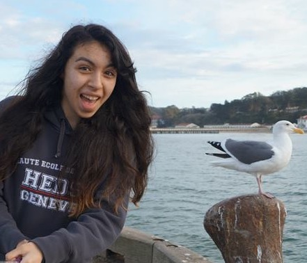
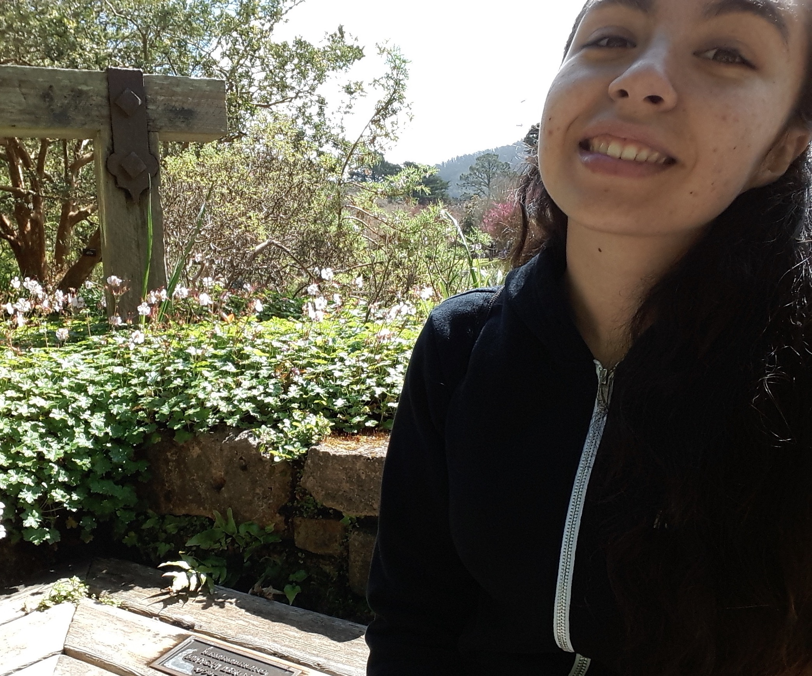

dev/Mission
A non-profit that connect the most overlooked population in San Francisco, Bay Area and beyond to expose them to careers in the tech industry.
Role: Team Lead and Front-end Lead
A diversity of thought, perspective, and culture is important in wanting to learn.
So trying everything and being open to anything is what I love to do.
Skills: Ruby, Rails, SQL, JavaScript, jQuery, Ajax, HTML5, CSS3, Sass,
Materialize, RSPEC, Jasmine, Heroku, MVC, OOP, agile development,
Postgres, Jekyll, Git
A non-profit that connect the most overlooked population in San Francisco, Bay Area and beyond to expose them to careers in the tech industry.
Role: Team Lead and Front-end Lead
Provides the immigrant community with tools to protect themselves from/during ICE (Immigration & Customs Enforcement) Raids.
Role: Android dev, Twilio API, co-designer, and internationalization.
Platform for Non-profit to help raise money, materials, and find volunteers in an easier way.
Role: Frontend, Team Lead, and design
I attended San Francisco State University part-time, meanwhile going to Dev Bootcamp to learn hands-on web development skills. Taught for a couple months the basics of HTML, CSS and Javascript to youth 16-24 years old. I also helped launch a non-profit called devMission to help diverse youth learn how to code. I am Board Liaison and Curriculum developer of dev/Mission. On my free time, I tutor anyone who needs help with code. I am passionate about getting more young girls into the STEM field!
Fun Facts:
I LOVE CODING. When I'm not coding you'll find me crafting.
Call me YaritzaDIY.
I LOVE DOGS. Dogs always make me happy especially fluffy ones.
Warning I will want to pet your dog
I LOVE SPACE..& all things magic. I really want to be a wizard!
Harry Potter enthusiast.
Aliquam ut ex ut augue consectetur interdum endrerit imperdiet amet eleifend fringilla.